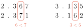
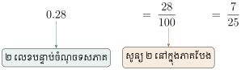
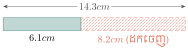

វត្ថុបំណង
- បង្ហាញពីសញ្ញាណចំនួនទសភាគ
- ប្តូរប្រភាគទៅជាចំនួនទសភាគនិងច្រាសមកវិញ
- ប្រៀបធៀបនិងរៀបលំដាប់នៃចំនួនទសភាគ
- បង្គត់ចំនួនទសភាគតាមកម្រិតដែលចង់បាន
- ធ្វើប្រមាណវិធីលើចំនួនទសភាគ
- ដោះស្រាយចំណោទដែលទាក់ទងនឹងចំនួនទសភាគ ។
1. សញ្ញាណចំនួនទសភាគ
ឧទាហរណ៍ 1 ៖ គេចែកបន្ទះមួយជា \(\displaystyle 10\) ផ្នែកស្មើៗគ្នា ។ ផ្នែកនីមួយៗស្មើនឹង \(\displaystyle \frac{1}{10}\) ។
\(\displaystyle \frac{1}{10}\) អាចសរសេរ \(\displaystyle 0.1\) (អានថាសូន្យចុចមួយ) មានន័យថា \(\displaystyle \frac{1}{10}=0.1\) និងច្រាសមកវិញ ។
គេចែកការ៉េមួយជា \(\displaystyle 100\) ផ្នែកស្មើគ្នា ។ ផ្នែកនីមួយៗស្មើនឹង \(\displaystyle \frac{1}{100}\) ។ ដូច្នេះ \(\displaystyle \frac{1}{100}=0.01\) (អានថាសូន្យចុចសូន្យមួយ) និងច្រាសមកវិញ ។
ចំនួនដូចជា \(\displaystyle 0.1\) និង \(\displaystyle 0.01\) ហៅថា ចំនួនទសភាគ ។ សញ្ញាចុច (\(\displaystyle .\)) ហៅថា ចំណុចទសភាគ ។
ជាទូទៅ ចំនួនទសភាគ ជាចំនួនអាចសរសេរជាប្រភាគដែលមានភាគបែងស្មើនឹង \(\displaystyle 10, 100, \dots\) ។
ឧទាហរណ៍ 2 ៖ \(\displaystyle 3.71,\ 0.50,\ 0.034,\ -1.25,\ -10.016,\ 246.31,\ \dots\) ។
1.1. តម្លៃលេខតាមខ្ទង់ក្នុងចំនួនទសភាគ
ដូចចំនួនគត់ដែរ លេខនីមួយៗនៅក្នុងចំនួនទសភាគមានតម្លៃជាក់លាក់មួយទៅតាមខ្ទង់របស់វាគឺ ខ្ទង់រាយ ខ្ទង់ដប់ ខ្ទង់ភាគដប់ ខ្ទង់ភាគរយ ខ្ទង់ភាគពាន់ \(\displaystyle \dots\) ។
ឧទាហរណ៍ ៖
1.2. ការប្រៀបធៀបចំនួនទសភាគ
ឧទាហរណ៍ ៖ ប្រៀបធៀបចំនួន \(\displaystyle 2.367\) និង \(\displaystyle 2.371\) រួចប្រៀបធៀប \(\displaystyle 3.135\) និង \(\displaystyle 3.162\) ។

គេប្រៀបធៀបលេខតាមខ្ទង់ ចាប់ពីខ្ទង់ធំបំផុតទៅ ៖
ដូច្នេះ \(\displaystyle 2.367<2.371\) និង \(\displaystyle 3.135<3.162\) ។
គេក៏អាចប្រើបន្ទាត់ចំនួនដើម្បីប្រៀបធៀបចំនួនទសភាគដែរ ។
1.3. ការរៀបលំដាប់ចំនួនទសភាគ
ឧទាហរណ៍ ៖ រៀប \(\displaystyle 3.09\), \(\displaystyle 3.04\) និង \(\displaystyle 3.07\) តាមលំដាប់កើន ។
គេចែកបន្ទាត់ចំនួននៅចន្លោះ \(\displaystyle 3.0\) និង \(\displaystyle 3.1\) ជា \(\displaystyle 10\) ផ្នែកស្មើគ្នា ។ ផ្នែកនីមួយៗស្មើគ្នានឹង \(\displaystyle 0.01\) ។
ដូច្នេះចំនួនទសភាគដែលបានរៀបតាមលំដាប់កើនគឺ \(\displaystyle 3.04,\ 3.07,\ 3.09\) ។
ស៊ីណាមានម៉ាស \(\displaystyle 45.73~\text{kg}\) សំមានម៉ាស \(\displaystyle 36.76~\text{kg}\) និងនារីមានម៉ាស \(\displaystyle 45.70~\text{kg}\) ។ តើអ្នកណាមានម៉ាសធំជាងគេបំផុត? អ្នកណាមានម៉ាសតូចជាងគេបំផុត?
ដូច្នេះស៊ីណាមានម៉ាសធំជាងគេបំផុតហើយ សំមានម៉ាសតូចជាងគេ ។
រៀបចំនួន \(\displaystyle -6.245,\ -5.867,\ -0.045,\ -3.243,\ -0.127\) តាមលំដាប់កើននិងលំដាប់ចុះ ។
មើលចម្លើយ
ចំនួនអវិជ្ជមានណាដែលតម្លៃដាច់ខាតធំជាង ចំនួននោះតូចជាង ៖
ដូចនេះ
- លំដាប់កើន ៖ \(\displaystyle -6.245,\ -5.867,\ -3.243,\ -0.127,\ -0.045\)
- លំដាប់ចុះ ៖ \(\displaystyle -0.045,\ -0.127,\ -3.243,\ -5.867,\ -6.245\) ។
2. ការប្តូរប្រភាគទៅជាចំនួនទសភាគ
ឧទាហរណ៍ 1 ៖ ប្តូរប្រភាគនីមួយៗជាចំនួនទសភាគ
ឧទាហរណ៍ 2 ៖ ពេលគេយក \(\displaystyle 2\) ចែកនឹង \(\displaystyle 3\) គេបាន \(\displaystyle \frac{2}{3}=0.6666\dots\) ។ បើគេនៅតែបន្តវិធីចែកគេនៅតែបានលេខ \(\displaystyle 6\) ជានិច្ច ។
ឬ \(\displaystyle 2\div3=0.6666\dots\)
ដោយវាមានការពិបាកក្នុងការសរសេរឱ្យបានគ្រប់លេខ \(\displaystyle 6\) ទាំងអស់ គេអាចប្រើរបារ ដើម្បីបង្ហាញថា \(\displaystyle 6\) មានច្រំដែលៗ ។ ក្នុងករណីនេះ ៖ គេថាវិធីចែកគ្មានទីបញ្ចប់ ។
ហៅថា ចំនួនទសភាគខួប ដែលមាន \(\displaystyle 6\) ជាខួប ។
ឧទាហរណ៍ 3 ៖ ប្តូរប្រភាគខាងក្រោមជាចំនួនទសភាគ ។
(ប្តូរទៅជាប្រភាគដែលមានភាគបែងស្មើនឹង \(\displaystyle 10\) ។)
3. ការប្តូរចំនួនទសភាគទៅជាប្រភាគ
ឧទាហរណ៍ ៖ ប្តូរចំនួនទសភាគនីមួយៗខាងក្រោម ជាប្រភាគឬចំនួនចម្រុះក្នុងទម្រង់ដែលមិនអាចសម្រួលបាន ៖
ក. \(\displaystyle 0.28\)

ខ. \(\displaystyle 0.\overline{2}\) តាង \(\displaystyle N=0.\overline{2}\) ឬ \(\displaystyle 0.222\dots\) នោះ \(\displaystyle 10N=2.222\dots\)
ដោយដក \(\displaystyle N=0.222\dots\) ពី \(\displaystyle 10N\) ដើម្បីបំបាត់ផ្នែកច្រំដែល \(\displaystyle 0.222\dots\) នោះគេបាន ៖
ដូច្នេះ \(\displaystyle 0.\overline{2}=\frac{2}{9}\) ។
លំហាត់គំរូ 1 ៖ ប្តូរចំនួនទសភាគខួបនីមួយៗដោយប្រើសញ្ញារបារនៅលើខួប ។
- ក. \(\displaystyle 0.363636\dots\)
- ខ. \(\displaystyle 10.0456456\dots\)
- គ. \(\displaystyle -7.074747\dots\)
ដំណោះស្រាយ
- ក. \(\displaystyle 0.363636\dots=0.\overline{36}\)
- ខ. \(\displaystyle 10.0456456\dots=10.0\overline{456}\)
- គ. \(\displaystyle -7.074747\dots=-7.0\overline{74}\) ។
លំហាត់គំរូ 2 ៖ ប្តូរចំនួនទសភាគខាងក្រោមជាប្រភាគ ៖
- ក. \(\displaystyle 0.065\)
- ខ. \(\displaystyle -1.\overline{7}\) ។
ដំណោះស្រាយ
- ក.
គេបាន ៖
\[0.065=\frac{65}{1000}=\frac{13}{200}\] - ខ.
តាង \(\displaystyle N=-1.\overline{7}\) នោះ \(\displaystyle 10N=-17.\overline{7}\) ។
\[\begin{aligned} 10N-N &= -17.\overline{7}-(-1.\overline{7}) \\ 9N &= -16 \\ N &= -\frac{16}{9}=-1\frac{7}{9} \end{aligned}\]
ដូច្នេះ \(\displaystyle -1.\overline{7}=-1\frac{7}{9}\) ។
ប្តូរចំនួនទសភាគខួបនីមួយៗជាប្រភាគ ។
- ក. \(\displaystyle 0.\overline{54}\)
- ខ. \(\displaystyle -4.\overline{01}\)
- គ. \(\displaystyle 0.\overline{345}\) ។
មើលចម្លើយ
- ក.
ខួបមាន \(\displaystyle 2\) ខ្ទង់ ដូចនេះគុណនឹង \(\displaystyle 100\) ៖
\[\begin{aligned} N &= 0.\overline{54} \\ 100N &= 54.\overline{54} \\ 99N &= 54 \\ N &= \frac{54}{99}=\frac{6}{11} \end{aligned}\] - ខ.
ខួបមាន \(\displaystyle 2\) ខ្ទង់ ដូចនេះគុណនឹង \(\displaystyle 100\) ៖
\[\begin{aligned} N &= -4.\overline{01} \\ 100N &= -401.\overline{01} \\ 99N &= -397 \\ N &= -\frac{397}{99} \end{aligned}\] - គ.
ខួបមាន \(\displaystyle 3\) ខ្ទង់ ដូចនេះគុណនឹង \(\displaystyle 1000\) ៖
\[\begin{aligned} N &= 0.\overline{345} \\ 1000N &= 345.\overline{345} \\ 999N &= 345 \\ N &= \frac{345}{999}=\frac{115}{333} \end{aligned}\]
ដូចនេះ ក. \(\displaystyle \frac{54}{99}\) ខ. \(\displaystyle -\frac{397}{99}\) គ. \(\displaystyle \frac{345}{999}\) ។
4. វិធីបូកនិងដកនៃចំនួនទសភាគ
4.1. វិធីបូកចំនួនទសភាគ
ឧទាហរណ៍ 1 ៖ គណនា \(\displaystyle 13.3~\text{cm}+5.2~\text{cm}\)
(ចំណុចទសភាគត្រូវដាក់ឱ្យត្រង់ជួរ តាមបន្ទាត់ឈរ ។)
ដូច្នេះ \(\displaystyle 13.3~\text{cm}+5.2~\text{cm}=18.5~\text{cm}\) ។
ឧទាហរណ៍ 2 ៖ គណនា
- ក. \(\displaystyle 3.49+18.753\)
- ខ. \(\displaystyle 101.51+13.31\)
ដំណោះស្រាយ
- ក.
តម្រឹមចំណុចទសភាគឱ្យត្រង់គ្នា ៖
\[\begin{array}{r} 3.490 \\ +\ 18.753 \\ \hline 22.243 \end{array}\]ដូច្នេះ \(\displaystyle 3.49+18.753=22.243\) ។
- ខ.
គេបាន ៖
\[\begin{aligned} 101.51+13.31 &= \frac{10151}{100}+\frac{1331}{100} \\ &= \frac{11482}{100} \\ &= 114.82 \end{aligned}\]ដូច្នេះ \(\displaystyle 101.51+13.31=114.82\) ។
4.2. វិធីដកចំនួនទសភាគ
ឧទាហរណ៍ ៖ គណនា \(\displaystyle 14.3~\text{cm}-8.2~\text{cm}\) ។

ដូច្នេះ \(\displaystyle 14.3~\text{cm}-8.2~\text{cm}=6.1~\text{cm}\) ។
គណនា
- ក. \(\displaystyle -2.34+(-16.5)+3.56\)
- ខ. \(\displaystyle -8.245-(-5.113)-(-0.456)\) ។
- ក.
គេបាន ៖
\[\begin{aligned} -2.34+(-16.5)+3.56 &= -2.34-16.5+3.56 \\ &= -18.84+3.56 \\ &= -15.28 \end{aligned}\] - ខ.
គេបាន ៖
\[\begin{aligned} -8.245-(-5.113)-(-0.456) &= -8.245+5.113+0.456 \\ &= -3.132+0.456 \\ &= -2.676 \end{aligned}\]
គណនា \(\displaystyle 4.235+(-6.563)-(-10.999)\) ។
មើលចម្លើយ
ដូចនេះ \(\displaystyle 8.671\) ។
5. វិធីគុណនិងចែកនៃចំនួនទសភាគ
5.1. វិធីគុណចំនួនទសភាគ
ឧទាហរណ៍ 1 ៖ គណនាផលគុណនីមួយៗខាងក្រោម ៖
- ក. \(\displaystyle 2.56\times8\)
- ខ. \(\displaystyle -1.482\times2.9\)
ដំណោះស្រាយ
- ក.
គេបាន ៖
\[\begin{aligned} 2.56\times8 &= \frac{256}{100}\times8 \\ &= \frac{2048}{100} \\ &= 20.48 \end{aligned}\](\(\displaystyle 2.56\) មានផ្នែកទសភាគ \(\displaystyle 2\) ខ្ទង់ ហើយ \(\displaystyle 8\) មាន \(\displaystyle 0\) ខ្ទង់ ដូចនេះផលគុណមានផ្នែកទសភាគ \(\displaystyle 2\) ខ្ទង់) ។ ដូច្នេះ \(\displaystyle 2.56\times8=20.48\) ។
- ខ.
គេបាន ៖
\[\begin{aligned} -1.482\times2.9 &= -\frac{1482}{1000}\times\frac{29}{10} \\ &= -\frac{42978}{10000} \\ &= -4.2978 \end{aligned}\](\(\displaystyle 1.482\) មានផ្នែកទសភាគ \(\displaystyle 3\) ខ្ទង់ ហើយ \(\displaystyle 2.9\) មាន \(\displaystyle 1\) ខ្ទង់ ដូចនេះផលគុណមានផ្នែកទសភាគ \(\displaystyle 4\) ខ្ទង់) ។ ដូច្នេះ \(\displaystyle -1.482\times2.9=-4.2978\) ។
ឧទាហរណ៍ 2 ៖ គណនាផលគុណនីមួយៗខាងក្រោម ៖
- ក. \(\displaystyle 0.387\times10=3.87\) គេរំកិលចំណុចទសភាគ \(\displaystyle 1\) ខ្ទង់ទៅខាងស្តាំ ។
- ខ. \(\displaystyle 0.387\times100=38.7\) គេរំកិលចំណុចទសភាគ \(\displaystyle 2\) ខ្ទង់ទៅខាងស្តាំ ។
- គ. \(\displaystyle 0.387\times1000=387\) គេរំកិលចំណុចទសភាគ \(\displaystyle 3\) ខ្ទង់ទៅខាងស្តាំ ។
- ឃ. \(\displaystyle -2.754\times10000=-27540\) គេរំកិលចំណុចទសភាគ \(\displaystyle 4\) ខ្ទង់ទៅខាងស្តាំ ។
ជាទូទៅ ដើម្បីគុណមួយចំនួនទសភាគនឹង \(\displaystyle 10, 100, 1000, \dots\) គេត្រូវរំកិលចំណុចទសភាគ \(\displaystyle 1, 2, 3, \dots\) ខ្ទង់ទៅខាងស្តាំរៀងៗគ្នា ។
5.2. វិធីចែកចំនួនទសភាគនឹងចំនួនគត់
ឧទាហរណ៍ 1 ៖ មីងណាវីបានផ្តល់ទឹកដោះគោ \(\displaystyle 0.4~\text{kg}\) ឱ្យកូនពីរនាក់ ។ កូនម្នាក់ៗទទួលបាន \(\displaystyle 0.2~\text{kg}\) ។ អ្នកទាំងពីរបានទឹកដោះគោស្មើគ្នា \(\displaystyle 0.4\div2\) ។
ដូច្នេះ \(\displaystyle 0.4\div2=0.2~\text{kg}\) ។
ឧទាហរណ៍ 2 ៖ គណនាផលចែកក្នុងករណីនីមួយៗខាងក្រោម ៖
- ក. \(\displaystyle 47.3\div10=4.73\)
- ខ. \(\displaystyle 47.3\div100=0.473\)
- គ. \(\displaystyle 4.73\div100=0.0473\) ។
ជាទូទៅ ដើម្បីចែកចំនួនទសភាគនឹង \(\displaystyle 10, 100, 1000, \dots\) គេរំកិលចំណុចទសភាគ \(\displaystyle 1, 2, 3, \dots\) ខ្ទង់ទៅខាងឆ្វេងរៀងគ្នា ។
5.3. វិធីចែកចំនួនទសភាគនឹងចំនួនទសភាគ
ឧទាហរណ៍ 1 ៖ គណនាផលចែកនីមួយៗខាងក្រោម ៖
- ក. \(\displaystyle 1.272\div0.03\)
- ខ. \(\displaystyle \frac{-0.0084}{-1.2}\div(-0.028)\) ។
ដំណោះស្រាយ
- ក.
គេបាន ៖
\[\begin{aligned} 1.272\div0.03 &= \frac{1.272}{0.03} \\ &= \frac{1.272\times100}{0.03\times100} \\ &= \frac{127.2}{3} \\ &= 42.4 \end{aligned}\] - ខ.
គេបាន ៖
\[\begin{aligned} \frac{-0.0084}{-1.2}\div(-0.028) &= -\left(\frac{0.0084}{1.2}\div0.028\right) \\ &= -(0.007\div0.028) \\ &= -(7\div28) \\ &= -0.25 \end{aligned}\]
ជាទូទៅ ដើម្បីចែកចំនួនទសភាគមួយនឹងចំនួនទសភាគមួយទៀត គេធ្វើតំណាំងចែកនិងតួចែកឱ្យទៅជាចំនួនគត់ ដោយគុណតំណាំងចែកនិងតួចែកនឹង \(\displaystyle 10, 100, 1000, \dots\) បន្ទាប់មកគេប្រើវិធីចែកនៃចំនួនគត់នឹងចំនួនគត់ ។
ឧទាហរណ៍ 2 ៖ គណនាផលចែកនីមួយៗខាងក្រោម ៖
- ក. \(\displaystyle 0.0796\div0.1=0.796\)
- ខ. \(\displaystyle 0.0796\div0.01=7.96\)
- គ. \(\displaystyle -0.796\div(-0.001)=796\)
- ឃ. \(\displaystyle -13.652\div0.001=-13652\)
គេឃើញថា ផលចែកបានមកដោយរំកិលចំណុចទសភាគក្នុងតំណាំងចែកទៅខាងស្តាំចំនួន \(\displaystyle 1\) ខ្ទង់ \(\displaystyle 2\) ខ្ទង់ \(\displaystyle 3\) ខ្ទង់ \(\displaystyle \dots\) បើតួចែកស្មើ \(\displaystyle 0.1, 0.01, 0.001, \dots\) ។
ជាទូទៅ ដើម្បីចែកចំនួនទសភាគមួយនឹង \(\displaystyle 0.1, 0.01, 0.001, \dots\) គេត្រូវរំកិលចំណុចទសភាគ \(\displaystyle 1, 2, 3, \dots\) ខ្ទង់ទៅខាងស្តាំរៀងគ្នា ។
5.4. វិធីចែកចំនួនទសភាគនឹងប្រភាគ
ឧទាហរណ៍ ៖ គណនា
- ក. \(\displaystyle 1.42\div\frac{5}{6}\)
- ខ. \(\displaystyle 2.5\div\left(-\frac{12.5}{3}\right)\) ។
ដំណោះស្រាយ (ប្តូរ \(\displaystyle \div\) ទៅជា \(\displaystyle \times\) និង \(\displaystyle \frac{5}{6}\) ទៅជា \(\displaystyle \frac{6}{5}\))
- ក.
គេបាន ៖
\[\begin{aligned} 1.42\div\frac{5}{6} &= 1.42\times\frac{6}{5} \\ &= \frac{8.52}{5} \\ &= 1.704 \end{aligned}\] - ខ.
គេបាន ៖
\[\begin{aligned} 2.5\div\left(-\frac{12.5}{3}\right) &= 2.5\times\left(-\frac{3}{12.5}\right) \\ &= -\frac{7.5}{12.5} \\ &= -0.6 \end{aligned}\]
គណនា
- ក. \(\displaystyle -0.16\times(-0.1)\times4.5\)
- ខ. \(\displaystyle -3.6\div(-0.0006)\) ។
- ក.
គេបាន ៖
\[\begin{aligned} -0.16\times(-0.1)\times4.5 &= +(0.16\times0.1\times4.5) \\ &= 0.016\times4.5 \\ &= 0.072 \end{aligned}\] - ខ.
គេបាន ៖
\[\begin{aligned} -3.6\div(-0.0006) &= +\left(\frac{3.6}{0.0006}\right) \\ &= \frac{36000}{6} \\ &= 6000 \end{aligned}\]
សៀវភៅ \(\displaystyle 5\) ក្បាលថ្លៃ \(\displaystyle 8050.175~\text{៛}\) ។ ណារ៉ុងបានទិញសៀវភៅ \(\displaystyle 15\) ក្បាល ហើយបានឱ្យប្រាក់ទៅគេចំនួន \(\displaystyle 30~000~\text{៛}\) ។ តើគេត្រូវអាប់ប្រាក់វិញចំនួនប៉ុន្មានរៀល?
មើលចម្លើយ
សៀវភៅ \(\displaystyle 5\) ក្បាល ថ្លៃ \(\displaystyle 8050.175~\text{៛}\) ដូចនេះសៀវភៅ \(\displaystyle 15\) ក្បាល ថ្លៃ \(\displaystyle 3\) ដងនៃ \(\displaystyle 8050.175~\text{៛}\) (\(\displaystyle 15=5\times3\)) ៖
ដូចនេះ គេត្រូវអាប់ប្រាក់វិញ \(\displaystyle 5~849.475~\text{៛}\) ។
6. ការបង្គត់ចំនួនទសភាគ
ការបង្គត់ចំនួនទសភាគក៏ដូចគ្នានឹងការបង្គត់ចំនួនគត់ដែរ ។ គេត្រូវដឹងថា ពេលដែលចំនួនណាមួយនៅចន្លោះកណ្តាលរវាងចំនួនពីរទៀតត្រូវបង្គត់ឡើង ។
ឧទាហរណ៍ 1 ៖ បង្គត់ចំនួន \(\displaystyle 2.85\) យកត្រឹមខ្ទង់ភាគដប់ ។
ពេលបង្គត់ត្រឹមខ្ទង់ភាគដប់ គេត្រូវមើលលេខក្រោយបន្ទាប់ខ្ទង់ភាគដប់ \(\displaystyle 1\) ខ្ទង់ គឺលេខ \(\displaystyle 5\) គេត្រូវបង្គត់ឡើង ។
ដូច្នេះ \(\displaystyle 2.85\approx2.9\) គេអាចបង្ហាញបានលើបន្ទាត់ចំនួនខាងក្រោម ៖
ឧទាហរណ៍ 2 ៖ បង្គត់ចំនួន \(\displaystyle 0.2198\) យកត្រឹមខ្ទង់ភាគរយ ។
គេត្រូវមើលលេខ \(\displaystyle 9\) ត្រូវបង្គត់ឡើងគឺ \(\displaystyle 0.22\) ។
ឧទាហរណ៍ 3 ៖ បង្គត់ចំនួន \(\displaystyle 1.92049\) យកត្រឹមខ្ទង់ភាគពាន់ ។ ចំនួន \(\displaystyle 1.92049\) ត្រូវបង្គត់ចុះ ។
ដូច្នេះ \(\displaystyle 1.92049\approx1.920\) ។
7. ចំណោទទសភាគ
ឧទាហរណ៍ ៖ ស្ត្រីម្នាក់ទិញទំនិញដូចជាសាច់ជ្រូក \(\displaystyle 4.2~\text{kg}\) បន្លែ \(\displaystyle 4.8~\text{kg}\) និងផ្លែឈើ \(\displaystyle 3.2~\text{kg}\) ។ ប្រាក់ចំណាយសរុបដែលបង្ហាញលើបង្កាន់ដៃបង់ប្រាក់គឺ \(\displaystyle 128~000~\text{៛}\) ។ ផ្លែឈើនិងបន្លែមានតម្លៃដូចគ្នាក្នុង \(\displaystyle 1~\text{kg}\) ចំណែកសាច់ជ្រូកមានតម្លៃ \(\displaystyle 18~000~\text{៛}\) ក្នុង \(\displaystyle 1~\text{kg}\) ។
- ក. គណនាទម្ងន់សរុបរបស់បន្លែនិងផ្លែឈើ
- ខ. គណនាប្រាក់ចំណាយសរុបលើការទិញសាច់ជ្រូក
- គ. គណនាតម្លៃបន្លែនិងផ្លែឈើក្នុង \(\displaystyle 1~\text{kg}\) ។
ដំណោះស្រាយ
- ក.
គេបាន ៖
\[4.8~\text{kg}+3.2~\text{kg}=8~\text{kg}\]ដូច្នេះទម្ងន់សរុបរបស់បន្លែនិងផ្លែឈើគឺ \(\displaystyle 8~\text{kg}\) ។
- ខ.
គេបាន ៖
\[18~000~\text{៛/kg}\times4.2~\text{kg}=75~600~\text{៛}\]ដូច្នេះប្រាក់ចំណាយសរុបលើការទិញសាច់ជ្រូកគឺ \(\displaystyle 75~600~\text{៛}\) ។
- គ.
គេបាន ៖
\[(128~000~\text{៛}-75~600~\text{៛})\div8~\text{kg}=6~550~\text{៛/kg}\]ដូច្នេះតម្លៃបន្លែនិងផ្លែឈើក្នុង \(\displaystyle 1~\text{kg}\) គឺ \(\displaystyle 6~550~\text{៛}\) ។
គ្រួសារមួយប្រើប្រាស់អគ្គិសនីអស់ \(\displaystyle 120.5\) គីឡូវ៉ាត់ម៉ោង (kwh) និងទឹកស្អាតអស់ \(\displaystyle 30.8\) ម៉ែត្រគូប (\(\displaystyle \text{m}^3\)) ក្នុង \(\displaystyle 1\) ខែ ។ តម្លៃសេវាអគ្គិសនីគឺ \(\displaystyle 600~\text{៛/kwh}\) និងតម្លៃទឹកស្អាតគឺ \(\displaystyle 400~\text{៛/m}^3\) ។ គណនាប្រាក់ចំណាយសរុបលើសេវាកម្មទាំងពីរ ។
ដូច្នេះគ្រួសារនោះចំណាយអស់ \(\displaystyle 84~620~\text{៛}\) ក្នុងមួយខែ ។
សុធីទិញទំនិញ \(\displaystyle 3\) ប្រភេទដូចជាមាន់ \(\displaystyle 5.2~\text{kg}\) បន្លែ \(\displaystyle 5.8~\text{kg}\) និងផ្លែឈើ \(\displaystyle 4.2~\text{kg}\) ។ គាត់ទទួលបានបង្កាន់ដៃបង់ប្រាក់ដែលចំណាយសរុប \(\displaystyle 150~000~\text{៛}\) ។ នៅលើបង្កាន់ដៃបង់ប្រាក់នេះ មាន់មានតម្លៃ \(\displaystyle 20~000~\text{៛}\) ក្នុង \(\displaystyle 1~\text{kg}\) ចំណែកបន្លែនិងផ្លែឈើមានតម្លៃស្មើគ្នា ។
- ក. គណនាទម្ងន់បន្លែនិងផ្លែឈើសរុប
- ខ. តើគាត់ចំណាយប្រាក់សរុបប៉ុន្មានលើការទិញមាន់?
- គ. តើបន្លែនិងផ្លែឈើថ្លៃប៉ុន្មានក្នុង \(\displaystyle 1~\text{kg}\) ?
មើលចម្លើយ
- ក.
គេបាន ៖
\[5.8+4.2=10~\text{kg}\] - ខ.
គេបាន ៖
\[20~000\times5.2=104~000~\text{៛}\] - គ.
គេបាន ៖
\[\begin{aligned} \text{ប្រាក់ចំណាយលើបន្លែនិងផ្លែឈើ} &= 150~000-104~000=46~000~\text{៛} \\ \text{តម្លៃក្នុង } 1~\text{kg} &= 46~000\div10=4~600~\text{៛} \end{aligned}\]
ដូចនេះ ក. \(\displaystyle 10~\text{kg}\) ខ. \(\displaystyle 104~000~\text{៛}\) គ. \(\displaystyle 4~600~\text{៛}\) ។
លំហាត់
សរសេរចំនួនទសភាគនីមួយៗខាងក្រោមទៅជាប្រភាគ
- ក. \(\displaystyle 0.23\)
- ខ. \(\displaystyle 0.25\)
- គ. \(\displaystyle 12.5\)
- ឃ. \(\displaystyle 0.\overline{2}\) ។
មើលដំណោះស្រាយ
- ក.
គេបាន ៖
\[0.23=\frac{23}{100}\] - ខ.
គេបាន ៖
\[0.25=\frac{25}{100}=\frac{1}{4}\] - គ.
គេបាន ៖
\[12.5=\frac{125}{10}=\frac{25}{2}=12\frac{1}{2}\] - ឃ.
តាង \(\displaystyle N=0.\overline{2}\) នោះ \(\displaystyle 10N=2.\overline{2}\) ៖
\[\begin{aligned} 10N-N &= 2.\overline{2}-0.\overline{2} \\ 9N &= 2 \\ N &= \frac{2}{9} \end{aligned}\]
សរសេរចំនួនទសភាគខួបនីមួយៗដោយប្រើសញ្ញារបារនៅលើខួប
- ក. \(\displaystyle 0.363636\dots\)
- ខ. \(\displaystyle 10.0456456\dots\)
- គ. \(\displaystyle -7.074747\dots\)
- ឃ. \(\displaystyle 18.003636\dots\) ។
មើលដំណោះស្រាយ
រកផ្នែកដែលច្រំដែលៗ ហើយដាក់របារនៅលើខួបនោះ ៖
- ក. ខួប \(\displaystyle 36\) ៖ \(\displaystyle 0.363636\dots=0.\overline{36}\)
- ខ. ខួប \(\displaystyle 456\) ៖ \(\displaystyle 10.0456456\dots=10.0\overline{456}\)
- គ. ខួប \(\displaystyle 74\) ៖ \(\displaystyle -7.074747\dots=-7.0\overline{74}\)
- ឃ. ខួប \(\displaystyle 36\) ៖ \(\displaystyle 18.003636\dots=18.00\overline{36}\)
សរសេរចំនួនទសភាគខាងក្រោមទៅជាប្រភាគ
- ក. \(\displaystyle 0.065\)
- ខ. \(\displaystyle -1.\overline{7}\) ។
មើលដំណោះស្រាយ
- ក.
គេបាន ៖
\[0.065=\frac{65}{1000}=\frac{13}{200}\] - ខ.
តាង \(\displaystyle N=-1.\overline{7}\) នោះ \(\displaystyle 10N=-17.\overline{7}\) ៖
\[\begin{aligned} 10N-N &= -17.\overline{7}-(-1.\overline{7}) \\ 9N &= -16 \\ N &= -\frac{16}{9}=-1\frac{7}{9} \end{aligned}\]
ប្តូរប្រភាគនីមួយៗខាងក្រោមជាចំនួនទសភាគ ៖
- ក. \(\displaystyle \frac{7}{10}\)
- ខ. \(\displaystyle \frac{13}{100}\)
- គ. \(\displaystyle \frac{59}{1000}\)
- ឃ. \(\displaystyle -\frac{2451}{10000}\)
- ង. \(\displaystyle -\frac{13}{52}\) ។
មើលដំណោះស្រាយ
- ក. \(\displaystyle \frac{7}{10}=0.7\)
- ខ. \(\displaystyle \frac{13}{100}=0.13\)
- គ. \(\displaystyle \frac{59}{1000}=0.059\)
- ឃ. \(\displaystyle -\frac{2451}{10000}=-0.2451\)
- ង.
សម្រួលមុន ៖
\[-\frac{13}{52}=-\frac{13\div13}{52\div13}=-\frac{1}{4}\]\[-\frac{1}{4}=-\frac{25}{100}=-0.25\]
ប្តូរចំនួនទសភាគនីមួយៗជាប្រភាគ ឬចំនួនចម្រុះជាទម្រង់ដែលបង្រួមបាន
- ក. \(\displaystyle 0.8\)
- ខ. \(\displaystyle -0.065\)
- គ. \(\displaystyle 8.375\)
- ឃ. \(\displaystyle -0.286\)
- ង. \(\displaystyle 8.7\) ។
មើលដំណោះស្រាយ
- ក.
គេបាន ៖
\[0.8=\frac{8}{10}=\frac{4}{5}\] - ខ.
គេបាន ៖
\[-0.065=-\frac{65}{1000}=-\frac{13}{200}\] - គ.
គេបាន ៖
\[8.375=\frac{8375}{1000}=\frac{67}{8}=8\frac{3}{8}\] - ឃ.
គេបាន ៖
\[-0.286=-\frac{286}{1000}=-\frac{143}{500}\] - ង.
គេបាន ៖
\[8.7=\frac{87}{10}=8\frac{7}{10}\]
បង្គត់ចំនួនទសភាគនីមួយៗខាងក្រោម ទៅជាចំនួនដែលមានផ្នែកទសភាគត្រឹមខ្ទង់ភាគដប់ ផ្នែកទសភាគត្រឹមខ្ទង់ភាគរយ និងផ្នែកទសភាគត្រឹមខ្ទង់ភាគពាន់ ។
- ក. \(\displaystyle -0.2508\)
- ខ. \(\displaystyle 6.8329\)
- គ. \(\displaystyle 8.4036\)
- ឃ. \(\displaystyle 13.2753\) ។
មើលដំណោះស្រាយ
មើលលេខខាងស្តាំខ្ទង់ដែលត្រូវបង្គត់ ៖ បើលេខនោះតូចជាង \(\displaystyle 5\) បង្គត់ចុះ បើ \(\displaystyle 5\) ឬធំជាង \(\displaystyle 5\) បង្គត់ឡើង ។
ចំនួន ត្រឹមខ្ទង់ភាគដប់ ត្រឹមខ្ទង់ភាគរយ ត្រឹមខ្ទង់ភាគពាន់ ក. \(\displaystyle -0.2508\) \(\displaystyle -0.3\) \(\displaystyle -0.25\) \(\displaystyle -0.251\) ខ. \(\displaystyle 6.8329\) \(\displaystyle 6.8\) \(\displaystyle 6.83\) \(\displaystyle 6.833\) គ. \(\displaystyle 8.4036\) \(\displaystyle 8.4\) \(\displaystyle 8.40\) \(\displaystyle 8.404\) ឃ. \(\displaystyle 13.2753\) \(\displaystyle 13.3\) \(\displaystyle 13.28\) \(\displaystyle 13.275\) គណនាតម្លៃខាងក្រោម ៖
- ក. \(\displaystyle 1.48+16.943\)
- ខ. \(\displaystyle 24.765+185+3.89\)
- គ. \(\displaystyle 0.096+17.67+103.598\)
- ឃ. \(\displaystyle 31.64-17.186\)
- ង. \(\displaystyle 14.3-8.56-1.246\)
- ច. \(\displaystyle 5.28-(-0.7)-(-9.16)\) ។
មើលដំណោះស្រាយ
- ក.
គេបាន ៖
\[\begin{array}{r} 1.480 \\ +\ 16.943 \\ \hline 18.423 \end{array}\] - ខ.
គេបាន ៖
\[\begin{aligned} 24.765+185+3.89 &= 209.765+3.89 \\ &= 213.655 \end{aligned}\] - គ.
គេបាន ៖
\[\begin{aligned} 0.096+17.67+103.598 &= 17.766+103.598 \\ &= 121.364 \end{aligned}\] - ឃ.
គេបាន ៖
\[\begin{array}{r} 31.640 \\ -\ 17.186 \\ \hline 14.454 \end{array}\] - ង.
គេបាន ៖
\[\begin{aligned} 14.3-8.56-1.246 &= 5.74-1.246 \\ &= 4.494 \end{aligned}\] - ច.
គេបាន ៖
\[\begin{aligned} 5.28-(-0.7)-(-9.16) &= 5.28+0.7+9.16 \\ &= 5.98+9.16 \\ &= 15.14 \end{aligned}\]
គណនាតម្លៃខាងក្រោម ៖
- ក. \(\displaystyle 4.27\times13\)
- ខ. \(\displaystyle 2.4\times8\times0.059\)
- គ. \(\displaystyle 14.2\times(-0.8)\times(-1.34)\)
- ឃ. \(\displaystyle -\frac{2}{5}\times[5.9-(-3)]\)
- ង. \(\displaystyle 9.2\times[(-4.1)-0.7]-2.62\)
- ច. \(\displaystyle -0.32-[-199+(-2001)]\times(-0.005)\)
- ឆ. \(\displaystyle (4+0.117)\times\left(-\frac{1}{4}\right)(0.06\times3.2)\)
- ជ. \(\displaystyle 3\frac{3}{7}\div\frac{8}{21}\times\frac{1}{27}\)
- ឈ. \(\displaystyle (-2+0.13)\times\left(-1+\frac{3}{2}\right)\)
- ញ. \(\displaystyle (1+0.15)\times\left(-\frac{1}{5}\right)\times(0.01\times1.2)\)
- ដ. \(\displaystyle \left(-\frac{1}{2}+0.5\right)\times(-3)-0.3\)
- ឋ. \(\displaystyle (-2023+1)\times\left(-\frac{1}{2022}\right)+(-3)\times\left(\frac{1}{3}\right)\) ។
មើលដំណោះស្រាយ
- ក.
គេបាន ៖
\[\begin{aligned} 4.27\times13 &= \frac{427}{100}\times13 \\ &= \frac{5551}{100} \\ &= 55.51 \end{aligned}\] - ខ.
គេបាន ៖
\[\begin{aligned} 2.4\times8\times0.059 &= 19.2\times0.059 \\ &= 1.1328 \end{aligned}\] - គ.
ផលគុណនៃចំនួនអវិជ្ជមានពីរជាចំនួនវិជ្ជមាន ៖
\[\begin{aligned} 14.2\times(-0.8)\times(-1.34) &= +(14.2\times0.8\times1.34) \\ &= 11.36\times1.34 \\ &= 15.2224 \end{aligned}\] - ឃ.
គេបាន ៖
\[\begin{aligned} -\frac{2}{5}\times[5.9-(-3)] &= -\frac{2}{5}\times(5.9+3) \\ &= -\frac{2}{5}\times8.9 \\ &= -\frac{17.8}{5} \\ &= -3.56 \end{aligned}\] - ង.
គេបាន ៖
\[\begin{aligned} 9.2\times[(-4.1)-0.7]-2.62 &= 9.2\times(-4.8)-2.62 \\ &= -44.16-2.62 \\ &= -46.78 \end{aligned}\] - ច.
គេបាន ៖
\[\begin{aligned} -0.32-[-199+(-2001)]\times(-0.005) &= -0.32-(-2200)\times(-0.005) \\ &= -0.32-11 \\ &= -11.32 \end{aligned}\] - ឆ.
គេបាន ៖
\[\begin{aligned} (4+0.117)\times\left(-\frac{1}{4}\right)(0.06\times3.2) &= 4.117\times(-0.25)\times0.192 \\ &= -1.02925\times0.192 \\ &= -0.197616 \end{aligned}\] - ជ.
គេបាន ៖
\[\begin{aligned} 3\frac{3}{7}\div\frac{8}{21}\times\frac{1}{27} &= \frac{24}{7}\times\frac{21}{8}\times\frac{1}{27} \\ &= \frac{24\times21}{7\times8\times27} \\ &= \frac{1}{3} \end{aligned}\] - ឈ.
គេបាន ៖
\[\begin{aligned} (-2+0.13)\times\left(-1+\frac{3}{2}\right) &= (-1.87)\times0.5 \\ &= -0.935 \end{aligned}\] - ញ.
គេបាន ៖
\[\begin{aligned} (1+0.15)\times\left(-\frac{1}{5}\right)\times(0.01\times1.2) &= 1.15\times(-0.2)\times0.012 \\ &= -0.23\times0.012 \\ &= -0.00276 \end{aligned}\] - ដ.
គេបាន ៖
\[\begin{aligned} \left(-\frac{1}{2}+0.5\right)\times(-3)-0.3 &= (-0.5+0.5)\times(-3)-0.3 \\ &= 0\times(-3)-0.3 \\ &= -0.3 \end{aligned}\] - ឋ.
គេបាន ៖
\[\begin{aligned} (-2023+1)\times\left(-\frac{1}{2022}\right)+(-3)\times\frac{1}{3} &= (-2022)\times\left(-\frac{1}{2022}\right)+(-1) \\ &= 1-1 \\ &= 0 \end{aligned}\]
គណនាតម្លៃខាងក្រោម ៖
- ក. \(\displaystyle 0.8\div4\)
- ខ. \(\displaystyle 3.41\div6\)
- គ. \(\displaystyle (-1.27)\div(-0.5)\)
- ឃ. \(\displaystyle 14.6\div\frac{8}{13}\)
- ង. \(\displaystyle -0.9\times[-10.2-(11.1)]\div[-0.2+(-0.1)]\)
- ច. \(\displaystyle 12(0.44\div0.4)-55.119\)
- ឆ. \(\displaystyle 0.8\div[-1.54-(-1.38)]\times0.002\)
- ជ. \(\displaystyle 0.72-(-0.0405)\div(-0.3)\times(-2.9)\) ។
មើលដំណោះស្រាយ
- ក.
គេបាន ៖
\[0.8\div4=0.2\] - ខ.
គេបាន ៖
\[3.41\div6=0.56833\dots=0.568\overline{3}\]ដោយចែកមិនដាច់ ចម្លើយជាចំនួនទសភាគខួបមានខួប \(\displaystyle 3\) (ឬ \(\displaystyle \frac{341}{600}\)) ។
- គ.
គេបាន ៖
\[\begin{aligned} (-1.27)\div(-0.5) &= \frac{1.27}{0.5} \\ &= \frac{12.7}{5} \\ &= 2.54 \end{aligned}\] - ឃ.
គេបាន ៖
\[\begin{aligned} 14.6\div\frac{8}{13} &= 14.6\times\frac{13}{8} \\ &= \frac{189.8}{8} \\ &= 23.725 \end{aligned}\] - ង.
គេបាន ៖
\[\begin{aligned} -0.9\times[-10.2-(11.1)]\div[-0.2+(-0.1)] &= -0.9\times(-21.3)\div(-0.3) \\ &= 19.17\div(-0.3) \\ &= -63.9 \end{aligned}\] - ច.
គេបាន ៖
\[\begin{aligned} 12(0.44\div0.4)-55.119 &= 12\times1.1-55.119 \\ &= 13.2-55.119 \\ &= -41.919 \end{aligned}\] - ឆ.
គេបាន ៖
\[\begin{aligned} 0.8\div[-1.54-(-1.38)]\times0.002 &= 0.8\div(-0.16)\times0.002 \\ &= -5\times0.002 \\ &= -0.01 \end{aligned}\] - ជ.
គេបាន ៖
\[\begin{aligned} 0.72-(-0.0405)\div(-0.3)\times(-2.9) &= 0.72-0.135\times(-2.9) \\ &= 0.72-(-0.3915) \\ &= 1.1115 \end{aligned}\]
ពីរាជធានីភ្នំពេញទៅខេត្តពោធិ៍សាត់មានចម្ងាយ \(\displaystyle 189.65~\text{km}\) ។ ខេត្តកំពង់ឆ្នាំងស្ថិតនៅចន្លោះភ្នំពេញនិងខេត្តពោធិ៍សាត់ ។ បើកំពង់ឆ្នាំងមានចម្ងាយ \(\displaystyle 91.45~\text{km}\) ពីភ្នំពេញ ។ តើពីខេត្តកំពង់ឆ្នាំងទៅពោធិ៍សាត់មានចម្ងាយប៉ុន្មាន \(\displaystyle \text{km}\) ?
មើលដំណោះស្រាយ
\[\begin{aligned} \text{ចម្ងាយពីកំពង់ឆ្នាំងទៅពោធិ៍សាត់} &= 189.65-91.45 \\ &= 98.2~\text{km} \end{aligned}\]ដូចនេះ ចម្ងាយពីកំពង់ឆ្នាំងទៅពោធិ៍សាត់គឺ \(\displaystyle 98.2~\text{km}\) ។
កញ្ញាចិន្ដាលាយទឹកក្រូច \(\displaystyle 0.225~\ell\) បញ្ចូលគ្នាជាមួយនឹងទឹក \(\displaystyle 1.65~\ell\) ដើម្បីធ្វើភេសជ្ជៈ ។ តើកញ្ញាចិន្តាធ្វើភេសជ្ជៈបានប៉ុន្មានលីត្រ?
មើលដំណោះស្រាយ
\[\begin{aligned} \text{ភេសជ្ជៈ} &= 0.225+1.65 \\ &= 1.875~\ell \end{aligned}\]ដូចនេះ កញ្ញាចិន្តាធ្វើភេសជ្ជៈបាន \(\displaystyle 1.875~\ell\) ។
យានយន្តមួយអាចធ្វើដំណើរបាន \(\displaystyle 0.032~\text{km}\) ក្នុងមួយវិនាទី ។ តើយានយន្តធ្វើដំណើរបានចម្ងាយប៉ុន្មានក្នុងរយៈពេល \(\displaystyle 2.8\) វិនាទី?
មើលដំណោះស្រាយ
\[\begin{aligned} \text{ចម្ងាយ} &= 0.032\times2.8 \\ &= 0.0896~\text{km} \end{aligned}\]ដូចនេះ យានយន្តធ្វើដំណើរបាន \(\displaystyle 0.0896~\text{km}\) (\(\displaystyle =89.6~\text{m}\)) ។
បុរសម្នាក់ចែកប្រាក់ចំនួន \(\displaystyle 864.60\) ដុល្លារ ឱ្យកូន \(\displaystyle 5\) នាក់ក្នុងចំណែកស្មើៗគ្នា ។ តើកូនម្នាក់ៗនឹងទទួលប្រាក់បានប៉ុន្មានដុល្លារ?
មើលដំណោះស្រាយ
\[\begin{aligned} \text{កូនម្នាក់ៗទទួលបាន} &= 864.60\div5 \\ &= 172.92~\text{ដុល្លារ} \end{aligned}\]ដូចនេះ កូនម្នាក់ៗទទួលបាន \(\displaystyle 172.92\) ដុល្លារ ។
វត្តីបានទិញកំណាត់ប្រវែង \(\displaystyle 2\frac{1}{3}~\text{m}\) អស់ប្រាក់ \(\displaystyle 15.75\) ដុល្លារ ដើម្បីធ្វើវាំងនន ។ សុភីបានទិញកំណាត់ប្រភេទដូចគ្នាប្រវែង \(\displaystyle 3.85~\text{m}\) ។ តើសុភីបានចំណាយអស់ប្រាក់ប៉ុន្មាន?
មើលដំណោះស្រាយ
តម្លៃកំណាត់ \(\displaystyle 1~\text{m}\) ៖
\[\begin{aligned} 15.75\div2\frac{1}{3} &= 15.75\div\frac{7}{3} \\ &= 15.75\times\frac{3}{7} \\ &= 6.75~\text{ដុល្លារ} \end{aligned}\]ប្រាក់ដែលសុភីចំណាយ ៖
\[\begin{aligned} 3.85\times6.75 &= 25.9875 \\ &\approx 25.99~\text{ដុល្លារ} \end{aligned}\]ដូចនេះ សុភីចំណាយអស់ប្រាក់ប្រហែល \(\displaystyle 25.99\) ដុល្លារ ។
កម្ដៅនៅក្នុងម៉ាស៊ីនត្រជាក់មួយមាន \(\displaystyle -6.3^\circ\text{C}\) ។ នៅពេលថាមពលថយចុះកម្ដៅបានកើន \(\displaystyle 10.7^\circ\text{C}\) ។ មួយម៉ោងក្រោយមក នៅពេលអគ្គិសនីបានផ្តល់ថាមពលដូចដើមវិញ កម្ដៅបានធ្លាក់ចុះ \(\displaystyle 9.9^\circ\text{C}\) ។ តើកម្ដៅចុងក្រោយនៃម៉ាស៊ីនត្រជាក់មានប៉ុន្មានអង្សា \(\displaystyle ^\circ\text{C}\) ?
មើលដំណោះស្រាយ
\[\begin{aligned} \text{កម្ដៅចុងក្រោយ} &= -6.3+10.7-9.9 \\ &= 4.4-9.9 \\ &= -5.5~^\circ\text{C} \end{aligned}\]ដូចនេះ កម្ដៅចុងក្រោយគឺ \(\displaystyle -5.5^\circ\text{C}\) ។
ខ្សែចម្លងមួយដុំមានប្រវែង \(\displaystyle 17.6~\text{m}\) ។ បើគេកាត់ចេញប្រវែង \(\displaystyle 2.37~\text{m}\) រកប្រវែងខ្សែចម្លងនោះនៅសល់ប៉ុន្មាន?
មើលដំណោះស្រាយ
\[\begin{aligned} \text{ប្រវែងនៅសល់} &= 17.6-2.37 \\ &= 15.23~\text{m} \end{aligned}\]ដូចនេះ ខ្សែចម្លងនៅសល់ \(\displaystyle 15.23~\text{m}\) ។
តុមួយមានរាងការ៉េដែលជ្រុងវាមានប្រវែង \(\displaystyle 5.5~\text{m}\) ។ រកបរិមាត្រនិងផ្ទៃក្រឡាតុនោះ ។
មើលដំណោះស្រាយ
\[\begin{aligned} \text{បរិមាត្រ} &= 4\times5.5=22~\text{m} \\ \text{ផ្ទៃក្រឡា} &= 5.5\times5.5=30.25~\text{m}^2 \end{aligned}\]ដូចនេះ បរិមាត្រតុគឺ \(\displaystyle 22~\text{m}\) និងផ្ទៃក្រឡាតុគឺ \(\displaystyle 30.25~\text{m}^2\) ។
បូណាធ្វើដំណើរតាមរថយន្តមួយបានចម្ងាយ \(\displaystyle 5\frac{1}{4}~\text{km}\) ឆ្ពោះទៅទិសខាងជើង បន្ទាប់មក \(\displaystyle 2\frac{1}{2}~\text{km}\) ទៅទិសខាងកើត រួច \(\displaystyle 4\frac{3}{8}~\text{km}\) ទៅទិសខាងជើងវិញ ។ រកចម្ងាយផ្លូវដែលរថយន្តបានធ្វើដំណើរ ។
មើលដំណោះស្រាយ
ចម្ងាយផ្លូវសរុបជាផលបូកនៃចម្ងាយទាំងបី ៖
\[\begin{aligned} 5\frac{1}{4}+2\frac{1}{2}+4\frac{3}{8} &= 5.25+2.5+4.375 \\ &= 12.125~\text{km} \\ &= 12\frac{1}{8}~\text{km} \end{aligned}\]ដូចនេះ រថយន្តបានធ្វើដំណើរ \(\displaystyle 12\frac{1}{8}~\text{km}\) (ឬ \(\displaystyle 12.125~\text{km}\)) ។
ខ្លឹមសារ៖ សៀវភៅពុម្ពគណិតវិទ្យាថ្នាក់ទី៧ របស់ក្រសួងអប់រំ យុវជន និងកីឡា · វាយអត្ថបទ គូររូបភាពឡើងវិញ និងរៀបចំលើអនឡាញដោយលោកគ្រូ សាន សុខលី សម្រាប់ការសិក្សាដោយឥតគិតថ្លៃ និងមិនរកប្រាក់ចំណេញ។ មិនមែនជាការបោះពុម្ពផ្លូវការរបស់ក្រសួងទេ។